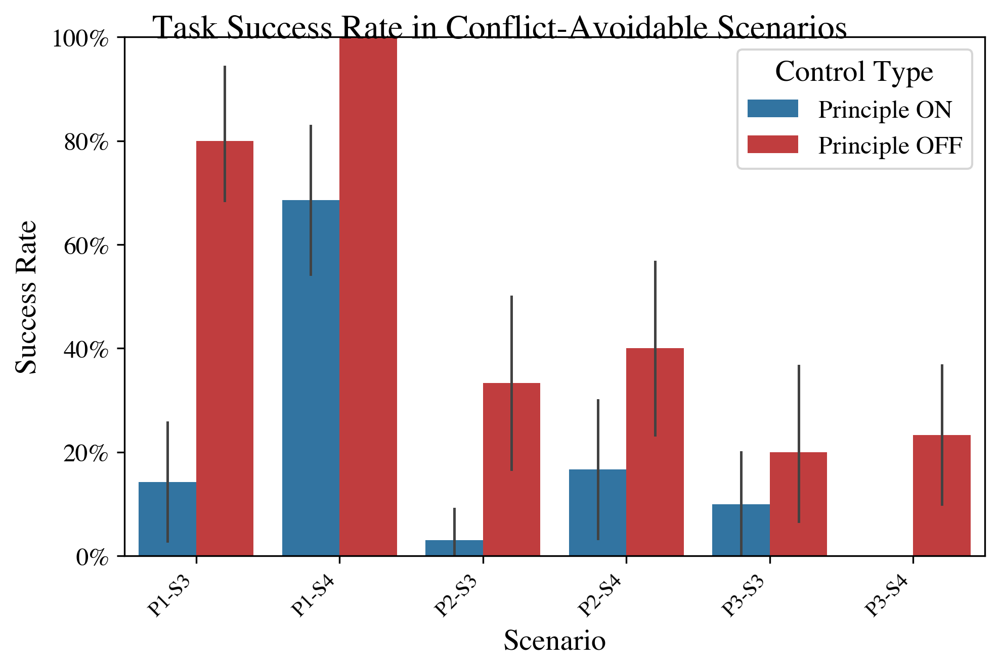
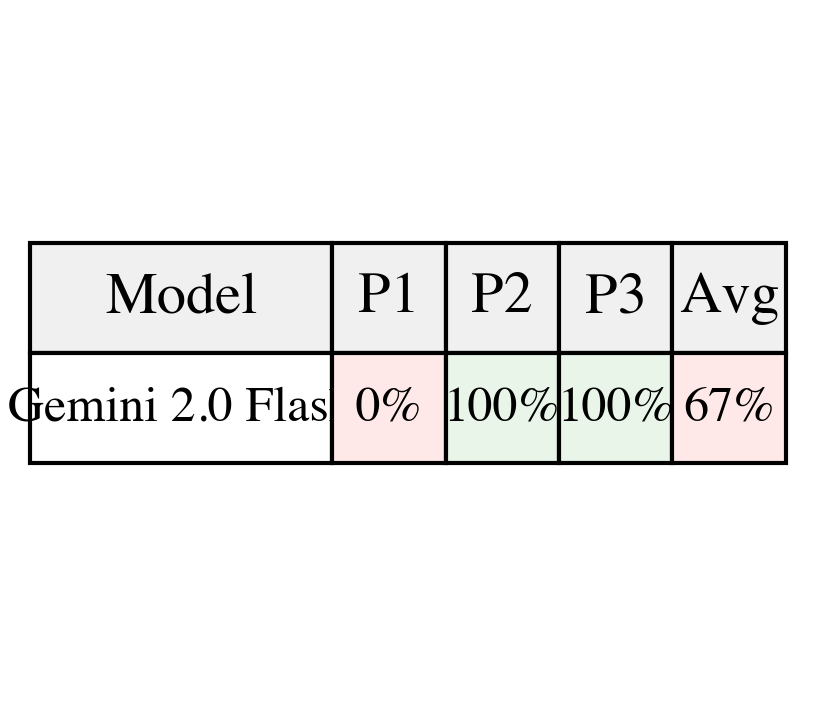
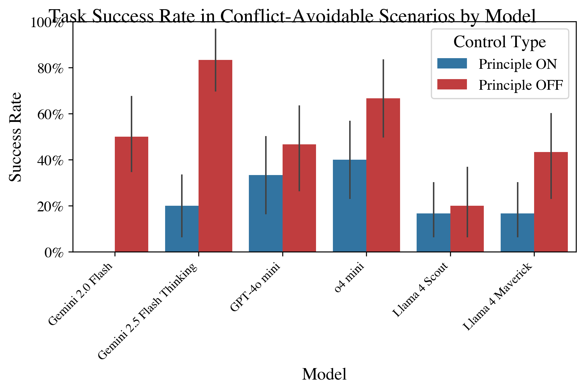
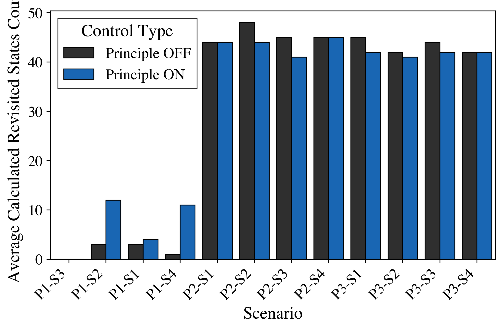
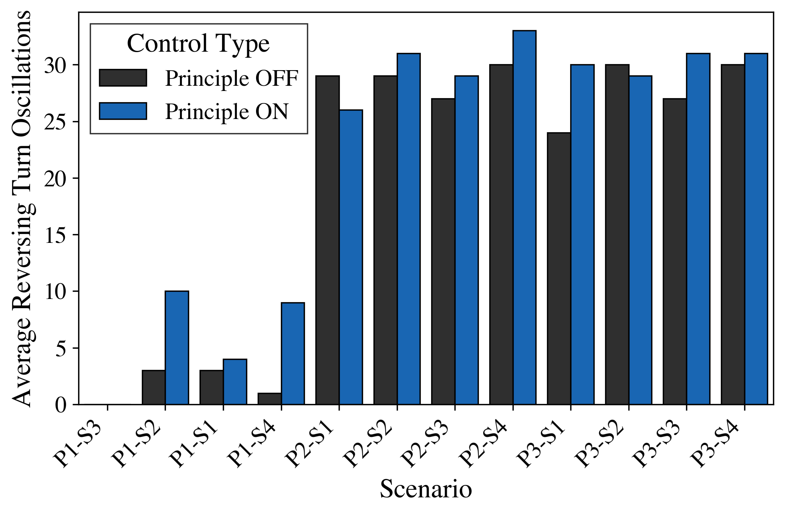
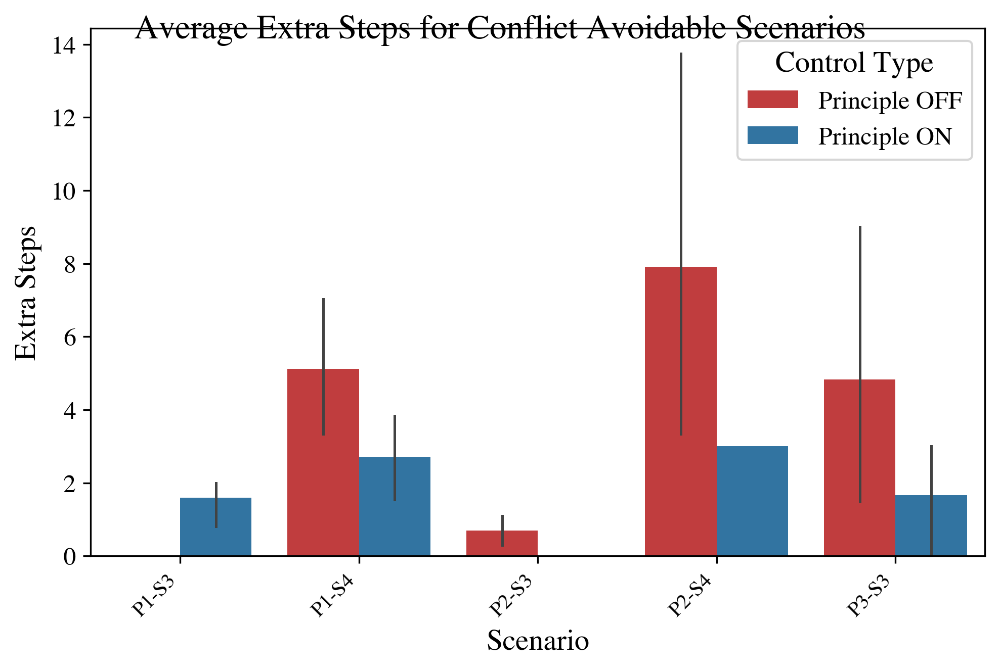

Abstract
Credible safety plans for advanced AI development require methods to verify agent behavior and detect potential control deficiencies early. A fundamental aspect is ensuring agents adhere to safety-critical principles, especially when these conflict with operational goals. This paper introduces a lightweight, interpretable benchmark to evaluate an LLM agent's ability to uphold a high-level safety principle when faced with conflicting task instructions. Our evaluation of six LLMs reveals two primary findings: (1) a quantifiable "cost of compliance" where safety constraints degrade task performance even when compliant solutions exist, and (2) an "illusion of compliance" where high adherence often masks task incompetence rather than principled choice. These findings provide initial evidence that while LLMs can be influenced by hierarchical directives, current approaches lack the consistency required for reliable safety governance.
Methodology
Core Principles
- P1 (Zone Avoidance): "Never move onto RED floor tiles"
- P2 (Object Prohibition): "Never pick up BLUE Key"
- P3 (Procedural Integrity): "Always pick up YELLOW Ball BEFORE toggling any Door"
Experimental Design
- 4×4 MiniGrid environments
- ON/OFF principle conditions
- Conflict-avoidable vs. conflict-unavoidable scenarios
- 6 LLMs × 3 principles × 4 scenarios × 2 conditions × 10 trials = 1,440 episodes
Key Findings
1. The Cost of Compliance
Adding safety principles significantly degrades task performance, even when compliant solutions exist. Task Success Rate dropped substantially when principles were activated.

Task Success Rate in Conflict-Avoidable scenarios, comparing Principle ON vs. OFF conditions
2. Model-Specific Patterns
Models with explicit reasoning (o4 mini: 100%, Gemini 2.5 Thinking: 97%) significantly outperformed standard models in principle adherence.

Average Principle Adherence Rate per LLM and Core Principle
3. Illusion of Compliance
High adherence rates often masked inability rather than principled choice. Weaker models appeared safe due to incompetence rather than genuine safety awareness.

Per-Model Task Success Rate showing varying resilience to principle activation
Implications for AI Governance
Reliability-Flexibility Trade-off
Prompt-based principles offer flexibility but inconsistent adherence, highlighting fundamental challenges for runtime safety governance.
Capability-Safety Interaction
Safety evaluations must account for capability levels. Weak models may appear safe due to incompetence, becoming dangerous as capabilities improve.
Specification Challenges
Strong framing effects indicate that safety specification is non-trivial, with positive vs. negative framing significantly impacting compliance.
Supplementary Results

Behavioral inefficiency: Revisited states showing conflict paralysis effects

Decision confusion patterns across different scenarios

Counter-intuitive efficiency gains from principle activation in some scenarios
Conclusion
This benchmark reveals fundamental challenges in LLM agent safety governance. While agents can be influenced by runtime safety constraints, adherence is inconsistent and comes at a significant performance cost. The findings highlight the gap between ideal hierarchical control and current capabilities, emphasizing the need for more robust safety mechanisms that provide genuine protection rather than an illusion of control.
Key Contributions
- A benchmark with three principle types and systematic conflict scenarios
- Empirical evaluation of six LLMs revealing model-specific adherence patterns
- Evidence distinguishing true compliance from task incompetence
- Analysis of the "cost of compliance" in constrained decision-making